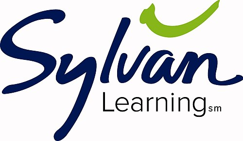

Present

Sylvan
Teacher
August 2024 – Present
Teacher
August 2024 – Present | Baton Rouge, Louisiana- Teach and tutor students in ACT test preparation, ensuring significant improvements in their test scores
- Deliver math instruction to students from various grade levels, ranging from foundational to advanced math concepts
- Foster a positive and engaging learning environment that encourages student confidence and curiosity
2023
Louisiana State University
Computer Science Teaching Assistant
Jan 2023 – May 2023
Computer Science Teaching Assistant
Jan 2023 – May 2023 | Baton Rouge, Louisiana- Effectively communicated with 40+ students and professor to debug lab problems for intermediate Java classes
- Developed more personalized studying techniques and efficient learning styles while enhancing communication skills
SOMETHING
Chevron
Software Engineering Intern
May 2023 – August 2023
Software Engineering Intern
May 2023 – August 2023 | Houston, Texas- Built and deployed user-friendly applications using PowerApps and SharePoint to help 40+ teammates organize weekly updates
- Developed comprehensive Power BI dashboards to analyze performance across 19 support regions
- Optimized resource allocation and enabled data-driven decision-making for regional leadership
- Enhanced team productivity through streamlined reporting processes
2022
.png)
Runatek
Software Engineering Intern
August 2022 – December 2022
Software Engineering Intern
August 2022 – December 2022 | Dallas Fort Worth, Texas- Led a firmware team of 3 people to package the Sotiras medical device
- Optimized foundational algorithms using Arduino to safely deliver consistent opioid concentrations to patients
- Built 2 front-end GUIs using JavaScript, HTML, and CSS for doctors to set dosing and monitor patient treatment data
- Optimized material selection and developed relationships with 2 external partners to expedite supply chain management